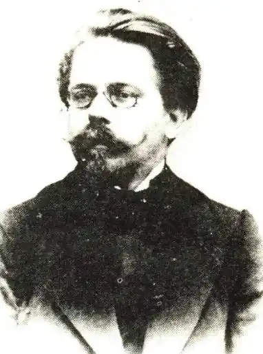

РЕЙМОНТ, Владислав Станіслав (Reymont, Wladyslaw Stanistaw — 07.05.1867, c. Koбель-Велькі — 05.12.1925, Варшава) — польський письменник, лауреат Нобелівської премії 1924 р.
Народився у багатодітній сім'ї сільського органіста. Дитячими захопленнями Реймонта були книги та природа. Світ, навіяний читанням книг, сповнений яскравих барв і невідомих почуттів, світ природи, що оточував родинну домівку Реймонта, — все це збагачувало душу підлітка неповторними враженнями, формувало його уяву та світогляд. Рано почалося трудове життя Реймонта — кравецька майстерня, репортерська справа, акторська трупа, праця на залізниці, перша публікація і — перший успіх. На початку 90-х pp. побачили світ його перші оповідання. Реймонт звернувся до теми польського селянства, відтворюючи сільський побут і характери. Страхітливі картини злиднів і голоду, дикість звичаїв, жорстокість у взаєминах між близькими родичами — раннім творам Реймонта властива похмура палітра, проте майстерність молодого прозаїка вразила багатьох шанувальників красного письменства. Рідкісна спостережливість, філігранність інтонацій, тяжіння до барвистості, живописної пластичності образів — усі ці риси визначають своєрідність таланту Реймонта, а його пейзажі уже в ранніх творах справляють значний вплив на читача.
Критики по-різному оцінювали творчість Реймонта: підкреслювали "страшний" реалізм його новел, називали його яскравим представником натуралізму, зауважували помітний ореол імпресіонізму у його пейзажах, проте були одностайними у захопленій оцінці його неповторно реймонтівської майстерності відтворення природи, самобутності його таланту. Оповідання Реймонта того періоду увійшли до збірок "Зустріч" ("Spotkanie", 1897), "Перед світанням" ("Przedswitem", 1902), "Зі щоденника" (1903). З ними тематично пов'язана створена пізніше, але визнана найвидатнішою у селянському циклі Реймонта повість "Справедливо" ("Sprawiedliwie", 1899). Юнак утікає з в'язниці. Він потрапив туди як злочинець, що наважився підняти руку на управителя. Ясь зробив це, намагаючись захистити честь коханої дівчини. Тому, хто викаже Яся, обіцяна винагорода. Гнаний жахом, він біжить додому, інстинктивно сподіваючись на те, що його зможуть захистити рідні стіни. Фінал твору трагічний. Страшну помсту знавіснілих від горя селян не зупинити. Вони підпалюють Ясеву хату, і навіть його мати вигукує: "Справедливо! Справедливо!", спостерігаючи за загибеллю свого сина. Страх перед люттю ошалілого натовпу, глухий біль душі, мрії про незвідане щастя у далекому краї — все це злилося в єдиному потоці страждання, болісних роздумів про долю людини на рідній землі. І лише шепіт колосся, вмитого росами-слізьми, та старі дерева перепиняють шлях... Втекти від того, до чого прив'язаний навіки, від рідної землі — неможливо. У 1894 р. увагу читачів привернули подорожні нариси Реймонта "Проща до Ясної Гори" ("Pielgrzymka do Jasnej Gory"). Того ж таки року Реймонт вирушив у Лондон, звідки надсилав у Варшаву свої кореспонденції, а потім подався у Париж. У 1896 р. вийшов друком перший великий твір Реймонта — роман "Комедіантка" ("Komedjantka"), а в 1897 р. його продовження — роман "Ферменти" ("Fermenty"). Обидва твори набули значного розголосу, відтак Реймонт потрапив до когорти найвидатніших польських літераторів своєї епохи. У цих романах письменник відтворює життя провінційного театру, розповідає про трагічну долю Янки Орловської, про її прагнення вирватися з болота філістерського існування, про крах ілюзій і спробу самогубства. Автор рятує свою героїню: її бунтівна душа, врешті, віднайшла спокій у лоні сім'ї. У 1899 p. Реймонт видав двотомний роман "Обіцяна земля" ("Ziemia obiecana"), присвячений Лодзі другої половини XIX ст. — "польському Манчестерові". У цьому творі письменник порушив нову для себе тему капіталістичного міста, зануреного в імлу і дим, з його жахливим гуркотом машин, брудом і дикістю, з його "всеосяжною боротьбою за злотий". Місто-спрут поглинає здоров'я і молодість, розум і мрії, свободу і силу, даруючи одним голод і виснаження, а іншим — мільйони. Реймонт відтворив широку панораму Лодзі, розкрив таємниці нагромадження величезних статків, показав польських підприємців і господарів обіцяної землі. Автора лякає місто-спрут, він прагне вирватися з цього пекла туди, де ліс "дихає запахом молодих берізок", його владно кличе земля. У письменника виникає задум створити епопею про землю, про польське селянство, про народ. Світову славу здобув роман "Селяни" ("Chlopi", 1904—1909) — вершина творчості Реймонта, підсумок ідейних і естетичних шукань письменника. "Селяни" — найкращий у польській літературі твір про село — складається з чотирьох частин: "Осінь", "Зима" (1904), "Весна"(1906), "Літо"( 1909). На широкому соціальному тлі у романі простежується історія однієї родини — сім'ї куркуля Мацея Борини. "Селяни" — епічний шедевр. Будучи видатним майстром композиції, Реймонт розкрив свій талант у всьому його розмаїтті: основну сюжетну лінію супроводжують інші колізії, створюючи єдину, цілісну образну структуру, відтворюючи широку панораму сільського життя. Р. показав найрізноманітніші верстви польського селянства: безземельних і малоземельних господарів, наймитів і поденників, середняків і куркулів. Складні сплетіння людських доль та характерів, динамічність розповіді, гострота сюжетних ліній створюють єдину, потужну тональність епопеї, що передає головне почуття у всій його повноті — любов до землі. "Приховуючи у собі невідомі глибини, хаос дрімотних марень, величезна і незнана, могутня і безпорадна, байдужа до бажань та прагнень, мертва і безсмертна" земля була священною для Реймонта. Вражає картина останньої ночі Борини напередодні смерті: він іде полем і в нестямі засіває землю землею. У цій сцені сконцентрована провідна думка роману: любов до землі, любов до праці — основа життя, її сенс і запорука її продовження. Реймонт віддав своє серце землі та людям, що на ній працюють. Людині-творцю присвячені найнатхненніші сторінки епопеї. Сувора правда про село з його конфліктами та трагедіями, з любов'ю і ненавистю також відтворена у романі Реймонта. Борина не хоче наділити землею власних дітей. Відтак його син Антек ледве не вбив батька, а мати не дозволяє дорослим синам одружитися, побоюючись, що вони вимагатимуть своєї частки землі. Спокусившись багатствами Борини, Домінікова віддає за нього свою доньку-красуню Ягну. "Влада землі" змінює людей. Земля слугує причиною конфлікту їхніх інтересів. "Селяни" — не лише найкращий твір Реймонта, а й один із найчудовіших польських романів своєї епохи. Майстерно відтворюючи місцевий колорит, письменник широко використовує народну творчість — легенди, загадки, приказки і прислів'я, яскраво змальовує народні обряди, детально описує весілля, сільські ярмарки, народні танці, вбрання. Мова роману є надзвичайно гнучкою і соковитою. Проза Реймонта — мелодійна, нерідко навіть ритмізована. Окремі ліричні фрагменти роману нагадують поезію у прозі. У "Селянах" Реймонт залишається неперевершеним майстром пейзажу. Природа у його романі нерозривно пов'язана з людиною, з її діяльністю. Природа, земля, праця, життя — ось головні складники поетичної могутності таланту P., якому вдалося опоетизувати ці поняття. Низкою новел відгукнувся письменник на події 1905 р. Революція видалася йому варварством. Кажуть, що Реймонт блукав робітничими кварталами, намагаючись збагнути психологію тих, хто вийшов на барикади.Новий роман "Мрійник" ("Marzyciel", 1910) тематично і за художньою манерою близький до "Комедіантки" та "Ферментів". Герой твору — касир на маленькій залізничній станції — втікає у Париж, мріючи про надзвичайне кохання і відчуваючи тугу за якимсь іншим життям. Проте на нього чекає розчарування. Події Першої світової війни також привернули увагу письменника. У збірці оповідань "За фронтом"("Za frontem", 1919) P. змальовує страшну картину спустошення, якого зазнало польське село під час війни. Сповнений трагізму образ нелюдських страждань — центральна тема циклу. З-поміж пізніх творів Реймонта вирізняється трилогія "1794 рік" ("Rok 1794", 1913-1918), присвячена подіям польської історії кінця XVIII ст., у якій письменник змалював постаті патріотів, учасників повстання під проводом Т. Костюшка. Історія у потужному багатоголоссі політичних подій ожила на сторінках цієї величної епопеї. Реймонт — письменник рідкісного епічного таланту, широкого тонального діапазону. Його творчий метод поєднував традиції епічного реалізму з елементами натуралізму та лірико-імпресіоністськими і символістськими тенденціями польської прози на зламі століть. У 1924 р. Шведська академія присудила Реймонту Нобелівську премію "за видатний національний епос-роман "Селяни", а 5 грудня 1925 р. письменника не стало. О. Рокаш